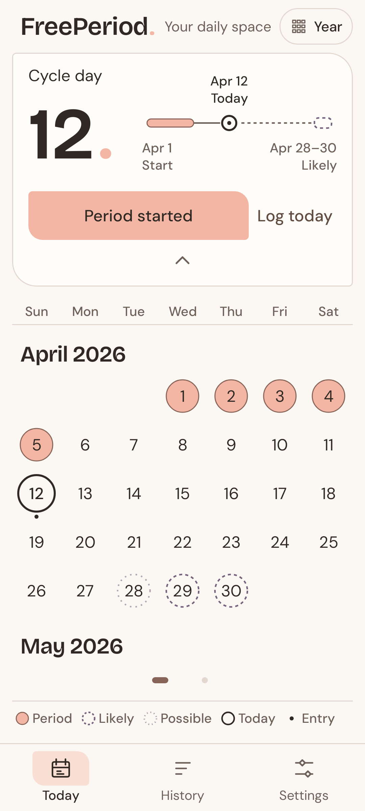
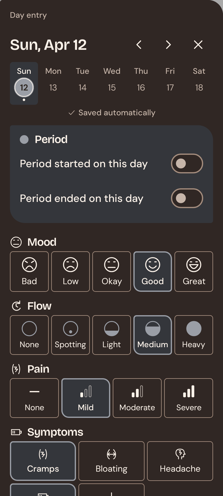
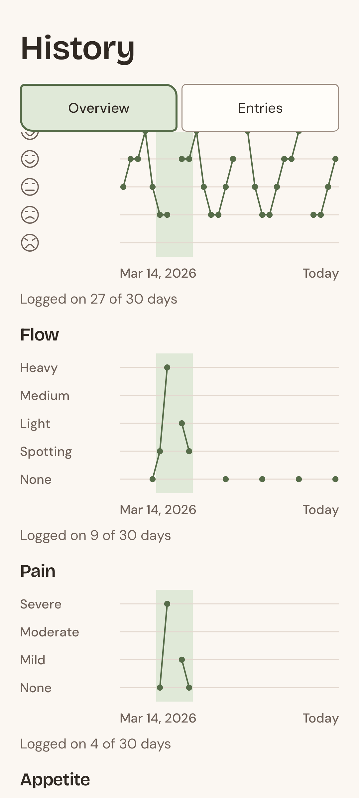
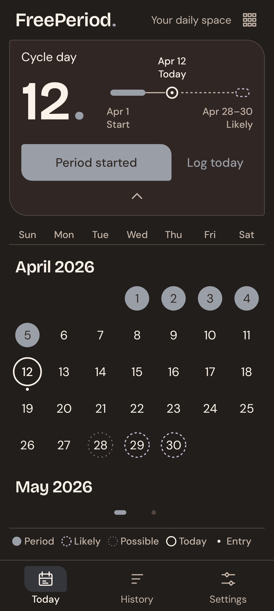
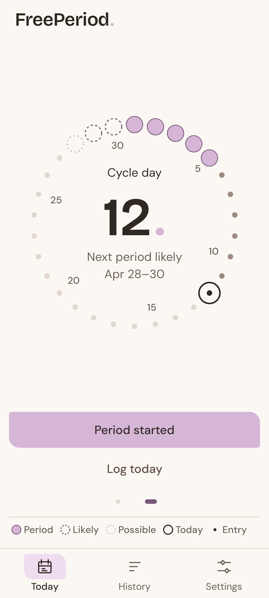
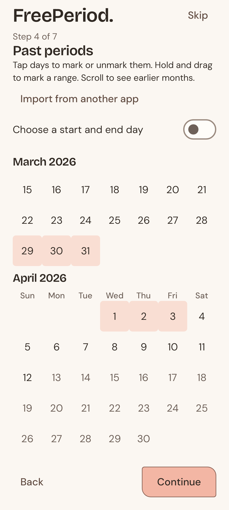

FreePeriod.
Your cycle stays on your phone.
- No internet permissionThe app can't send anything online.
- No account, no adsFree, without sign-up or subscription.
- No trackingNo analytics, no ad trackers.
- Open sourceAnyone can check the code.
Calendar estimates from your own entries.

Mood, flow, pain, symptoms, notes – all yours to shape.

Charts from a week to a year.

Nine colours. Make it yours.

Light · Coral
Dark · Ink
Swipe between calendar and ring.

Import an export file, a CSV or a backup.
